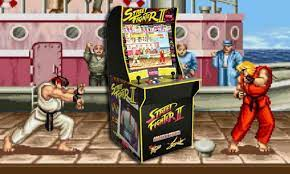

Tipos de juegos y su clasificacion
ACCION:  ARCADE: ESTRATEGIA: SIMULACION: DEPORTIVO: MUSICALES:
de lucha y peleas. Basados en ejercicios de repetición (por ejemplo, pulsar un botón para que el personaje ejecute una acción).
plataformas, laberintos, aventuras. El usuario debe superar pantallas para seguir jugando. Imponen un ritmo rápido y requieren tiempos de reacción mínimos. Por ejemplo el juego de The last of us ps4 de Sony en la que el usuario desempeña el papel de un superviviente. Tiene que hacer frente a feroces infectados y despiadados bandidos humanos.
aventuras, rol, juegos de guerra…Consisten en trazar una estrategia para superar al contrincante. Exigen concentración, saber administrar recursos, pensar y definir estrategias.

aviones, simuladores de una situación o instrumentales… Permiten experimentar e investigar el funcionamiento de máquinas, fenómenos, situaciones y asumir el mando.
fútbol, tenis, baloncesto y conducción. Recrean diversos deportes. Requieren habilidad, rapidez y precisión. Como el nba 2k14 ps3 de Sony de baloncesto.
juegos que inducen a la interacción del jugador con la música y cuyo objetivo es seguir los patrones de una canción. Como puede ser el caso del juego de la voz para ps3 en el que las la letra de la canción aparecen en pantalla junto a unas barras que nos indican cómo estamos cantando, si nos estamos acercando al tono de la canción y la puntuación que estamos consiguiendo.